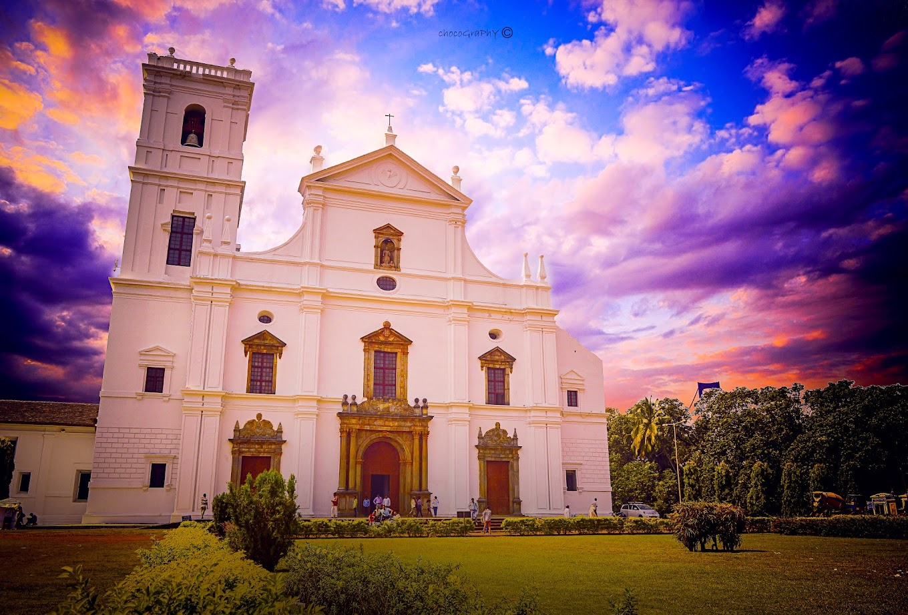
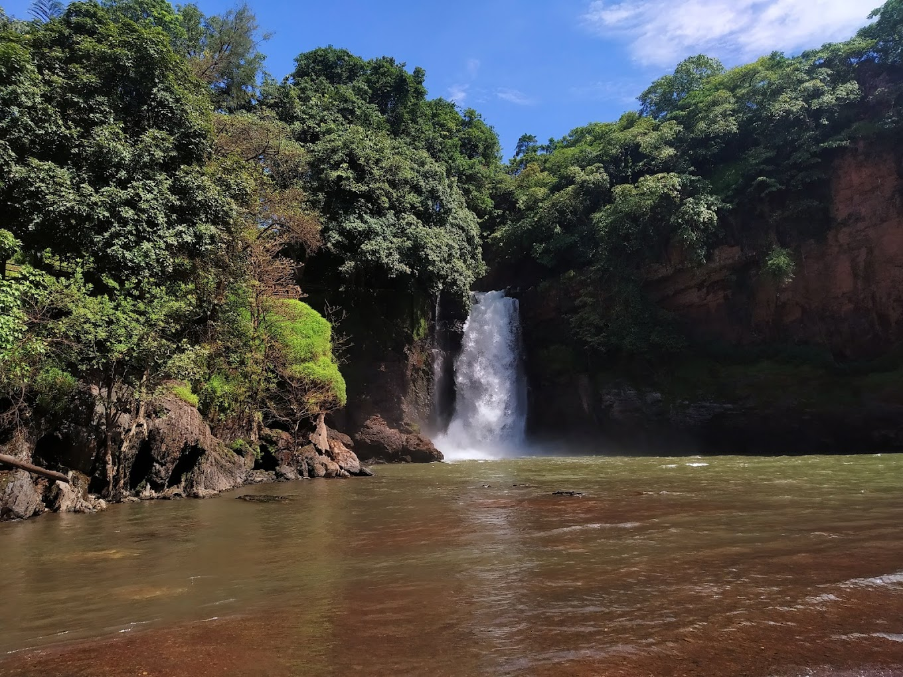
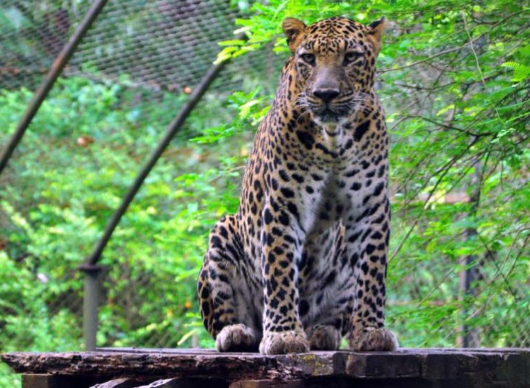

Fun Filled Goa

Baga Beach

Se Cathedral

Butterfly Beach

Arvalem Waterfalls

Bondla Wildlife Sanctuary
Best Deal
Starts from 25,000
per person on twin sharing
6 Days 7 Nights
1 City 1 Country
Goa: North Goa Calangute Beach ,Old Goa,South Goa
Days Plan
-
Day 1
Goa-Arrival and Beach Relaxation
Arrive at Goa's Dabolim Airport or railway station. Check-in at your hotel or accommodation. Calangute Beach: Start your Goa experience by heading to Calangute Beach, one of the most popular and bustling beaches in North Goa. Enjoy sunbathing, swimming, or water sports activities like parasailing and jet skiing. Lunch: Indulge in some seafood or Goan delicacies at one of the beach shacks or nearby restaurants. -
Day 2
Historical Exploration
Explore the historic district of Old Goa, a UNESCO World Heritage Site. Visit iconic churches such as the Basilica of Bom Jesus, Se Cathedral, and Church of St. Francis of Assisi, showcasing exquisite Portuguese architecture and religious significance. Enjoy a traditional Goan meal at a restaurant in Old Goa or nearby. Museum of Christian Art: Visit the Museum of Christian Art, located within the Convent and Church of St. Francis of Assisi complex. Explore its impressive collection of Christian artifacts and religious art dating back to the Portuguese era. -
Day 3
Adventure and Nature
Dudhsagar Waterfalls: Embark on an excursion to Dudhsagar Waterfalls, one of the tallest waterfalls in India. Enjoy a scenic drive through lush forests and rugged terrain to reach the waterfalls. Optionally, you can take a Jeep safari or trek to the base of the falls. Pack a picnic or enjoy local snacks from vendors near Dudhsagar Waterfalls. Bhagwan Mahavir Wildlife Sanctuary: Explore the Bhagwan Mahavir Wildlife Sanctuary, located near Dudhsagar Waterfalls. Go for a nature walk, birdwatching, or visit the Tambdi Surla Temple, an ancient Shiva temple nestled in the sanctuary. Return to your accommodation in North Goa. -
Day 4
South Goa Beaches
Start your day with a visit to Agonda Beach, a serene and less crowded beach in South Goa. Relax on the golden sands, swim in the calm waters, or indulge in beachside yoga sessions. Enjoy a beachfront meal at one of the shacks or cafes along Agonda Beach. Palolem Beach: Head to Palolem Beach, another picturesque beach known for its crescent-shaped coastline and scenic beauty. Take a boat ride to Butterfly Island or Monkey Island for snorkeling and dolphin spotting. Chill at Palolem: Spend the evening soaking in the laid-back vibes of Palolem Beach. Enjoy a sunset walk along the shoreline and unwind at a beach shack with live music and delicious seafood. -
Day 5
Cultural and Artistic Exploration
Visit the Ancestral Goa (Big Foot) museum in Loutolim, South Goa. Explore the outdoor museum showcasing Goan village life, traditional handicrafts, and a sculpture garden depicting Goan myths and legends. Savor traditional Goan cuisine at the museum's restaurant or nearby eateries. Mario Miranda Gallery: Explore the Mario Miranda Gallery in Calangute, dedicated to the works of renowned Goan artist Mario Miranda. Admire his vibrant and humorous illustrations depicting Goan life and culture. -
Day 5
Mario Miranda Gallery
Explore the Mario Miranda Gallery in Calangute, dedicated to the works of renowned Goan artist Mario Miranda. Admire his vibrant and humorous illustrations depicting Goan life and culture. Evening: Night Market: Experience the vibrant atmosphere of the Saturday Night Market in Arpora (open only on Saturdays). Browse through stalls selling handmade crafts, clothing, jewelry, and enjoy live music performances and delicious street food. -
Day 6
Spice Plantation Tour and Relaxation
Embark on a guided tour of a spice plantation in South Goa. Learn about various spices and herbs cultivated in Goa, such as pepper, cardamom, cinnamon, and vanilla. Enjoy a traditional Goan lunch prepared with fresh ingredients from the plantation. Relaxation: Return to your accommodation and spend the afternoon relaxing by the pool or at the beach. Alternatively, you can opt for a rejuvenating spa treatment to unwind and pamper yourself. -
Day 7
Beach Activities and Farewell
Spend your last day in Goa soaking up the sun and enjoying beach activities. Choose from snorkeling, parasailing, banana boat rides, or simply relax on the beach and take a dip in the sea.Bid farewell to Goa with a mesmerizing sunset view from your favorite beach spot. Reflect on your memorable experiences and cherish the moments spent in this tropical paradise.
Tour Includes